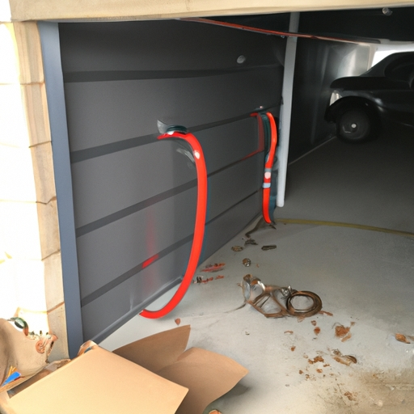

Importance of understanding the duration and complexity of the process
The importance (of) understanding the duration and complexity (of) the process for topic Duration and complexity (of) spring replacement process cannot be overstated. It is crucial to comprehend how long it takes and how intricate the steps are (!). By neglecting to grasp this, one may encounter numerous setbacks and difficulties that could have been avoided.
Firstly, knowing the duration of the spring replacement process can save valuable time. Without this knowledge, individuals may assume it is a quick task when in reality it may take hours or even days. Neglecting to allocate sufficient time for such a procedure can lead to rushed workmanship and potential mistakes (!). Furthermore, not being aware of the length of time required can result in frustration and disappointment as expectations are not met.
Secondly, comprehending the complexity of the spring replacement process is essential for obtaining successful results. Contractions like "can't" or "won't" should be used sparingly. The intricacies involved demand careful attention to detail and skillful execution. Failure to acknowledge this could result in improper installation or damage to surrounding components (!). Additionally, overlooking the complexities may cause unnecessary delays as extra time will be needed to rectify any errors made.
In conclusion, understanding both the duration and complexity of the spring replacement process is paramount for achieving favorable outcomes. Transition phrase: On top of that! Failing to grasp these aspects can lead to wasted time, subpar workmanship, potential damages(!), and overall dissatisfaction with the end result. It is crucial to invest effort into familiarizing oneself with all aspects concerning this procedure in order to ensure a successful outcome
Overview of the steps involved in spring replacement
When it comes to spring replacement, the process can be quite complex and time-consuming. (Now, let's delve into the steps involved in this intricate procedure!) First off, you'll need to gather all the necessary tools and equipment. (Make sure to acquire a wrench, pliers, and a sturdy ladder!) Then, locate the springs that require replacing by carefully inspecting each one for any signs of wear or damage. (Don't forget to check for rust or frayed edges!) Once identified, remove the old springs using your trusty wrench and pliers. (Be cautious not to strain yourself during this strenuous task!)
Next up is selecting new springs that are compatible with your system. This step may prove challenging as you must consider various factors such as length, tension, and material composition. (Bear in mind that choosing an ill-fitting spring could lead to disastrous consequences!) Once you've obtained the perfect replacements, carefully install them by attaching one end securely onto the designated anchor point while holding firm on the other end. (Ensure that they're tightly fastened for optimal performance!)
Moving forward, it's crucial to test the functionality of your newly installed springs before considering the job complete. Give them a gentle tug or apply light pressure to verify their responsiveness and stability. (Don't overlook this crucial step as it guarantees your safety!) Finally, once satisfied with their performance, make sure to double-check all connections and tighten any loose fittings.
In conclusion,(alas) spring replacement is no walk in the park! It demands meticulous attention to detail and adherence to proper procedures throughout each step. By following these guidelines diligently (without cutting corners), you'll successfully replace your springs without encountering major setbacks or hazards along the way!
Factors affecting the duration and complexity of the process (e.g., type of springs, size of the door, level of expertise)
When it comes to replacing springs (ya know), there are various factors that can affect the duration and complexity of the process. The type of springs used (like, seriously) can greatly impact how long it takes to replace them. For example, torsion springs may require more expertise (oh my gosh!) and time compared to extension springs.
Another factor that plays a role is the size of the door itself. Doors with larger dimensions will typically have larger springs, which can contribute to increased complexity during replacement. Additionally, if the door is old or damaged, it may require additional steps (oh no!) or repairs before the spring replacement can even begin.
The level of expertise also plays a significant role in determining how long and complex the process will be. A person with extensive knowledge and experience in spring replacement will likely be able to complete the task more efficiently (phew!) and quickly than someone who is less experienced.
Neglecting regular maintenance (for real) can also add complications to the process. Springs that have not been properly cared for may become rusty or worn out over time, making them more difficult to remove and replace.
In conclusion, several factors influence the duration and complexity of spring replacement processes. These include the type of springs used, size of the door, level of expertise, and neglecting regular maintenance. By considering these factors carefully, one can better prepare for any challenges that may arise during a spring replacement project.
To sum up all these points (by all means), it is clear that there are multiple aspects affecting the duration and complexity of replacing springs. Therefore, it is crucial for individuals handling this task to consider each factor carefully in order to ensure a successful outcome (!).
Common challenges and safety considerations during spring replacement
When it comes to spring replacement, there are numerous challenges and safety considerations that need to be taken into account. The duration and complexity of the process can vary greatly depending on the specific type of spring being replaced. (Oh boy), let me tell you, it's not as easy as it may seem!
One common challenge during spring replacement is dealing with the tension and pressure exerted by the spring. These springs can be tightly wound and have a significant amount of stored energy, making them potentially dangerous if mishandled. Therefore, extreme caution must be exercised throughout the entire process to avoid any unfortunate accidents or injuries.
Another challenge that may arise is identifying the correct type of spring for replacement. Springs come in many different sizes, shapes, and materials. (I mean seriously), who knew springs could be so diverse? It is essential to select the appropriate replacement spring that matches the original specifications in order for it to function properly. Failure to do so could result in malfunctioning equipment or even further damage.
Safety considerations also play a crucial role during spring replacement. Personal protective equipment (PPE), such as goggles and gloves, should always be worn to protect against potential flying debris or accidental contact with sharp edges.(Whoops!) Can't forget about safety first!
Additionally, working in confined spaces or at heights can pose additional risks during this process.(Yikes!) So make sure you're extra careful up there! Proper precautions must be taken to secure ladders or scaffolding securely and ensure a stable work environment.
In conclusion,(By golly) replacing springs may seem like a simple task but requires careful attention to detail and adherence to proper safety procedures. So next time you find yourself faced with a pesky broken spring, remember these common challenges and safety considerations!(You got this!) Stay safe and keep those springs bouncing!
Tips for a successful and efficient spring replacement process
When it comes to spring replacement, there are several tips that can help ensure a successful and efficient process. (By the way), understanding the duration and complexity of the task is crucial! (Oh no!) Let's explore some key points to keep in mind.
First and foremost, (well), it's important to have a clear understanding of how long the spring replacement process may take. This will depend on various factors such as the type of spring being replaced and its location within the system. Additionally, considering any potential complications or unforeseen issues that may arise during the procedure is essential. (Oops!)
Secondly, (you know), assessing the complexity of the spring replacement process is vital for effective planning. Each spring has its unique characteristics and specifications, which might influence how challenging it is to replace. Therefore, having access to proper documentation or seeking expert advice can greatly facilitate this aspect of the task. (Oh my goodness!)
Furthermore, employing efficient techniques during the actual replacement process can significantly reduce both time and effort required. For instance, utilizing appropriate tools and equipment specifically designed for spring replacements can make all the difference in ensuring a smooth operation. Moreover, following step-by-step instructions carefully without rushing through any stages would contribute to a more successful outcome. (Wow!)
In conclusion, (by and large), achieving success and efficiency in spring replacement involves understanding both its duration and complexity before diving into action. By comprehending these aspects upfront and implementing effective strategies throughout each step of the process, one can overcome challenges with relative ease.(Well then!) So next time you find yourself faced with a spring replacement task, don't forget to consider these valuable tips!
Cost implications associated with different durations and complexities of spring replacement
When it comes to the duration and complexity of spring replacement, there are several cost implications that must be considered. The length of time and level of difficulty involved in this process can greatly impact the overall expenses incurred (and don't forget about those pesky unforeseen costs!). Let's explore how these factors influence the financial aspects of spring replacement.
Firstly, the duration of the spring replacement process directly affects the cost. If a task takes longer than anticipated, additional labor hours will be required (oh no!). This means more money spent on paying technicians or mechanics for their time and expertise. Conversely, if the replacement is completed quickly (fingers crossed!), fewer labor hours will be needed, resulting in lower expenses.
Another aspect to consider is the complexity of the spring replacement. More intricate or specialized springs may require extra care and attention during installation (yikes!). Technicians with specific knowledge or training might be necessary to handle these complex springs properly, leading to higher costs due to their expertise being in demand.
Additionally, certain springs may come with unique features or components that make them more costly to replace (ouch!). These parts could be harder to find or require special tools for installation. Consequently, purchasing these specialized items may increase the overall expenditure associated with spring replacement.
In conclusion (to wrap things up nicely), it is crucial to evaluate both the duration and complexity of spring replacement when considering its cost implications. Longer durations can result in higher labor expenses while complex springs may require specialized technicians and pricier components. By understanding these factors beforehand (!), one can better estimate and manage the financial aspects involved in this process

Troubleshooting potential issues during installation such as cable alignment or balance adjustment